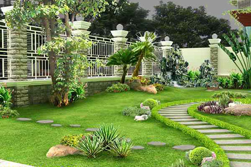
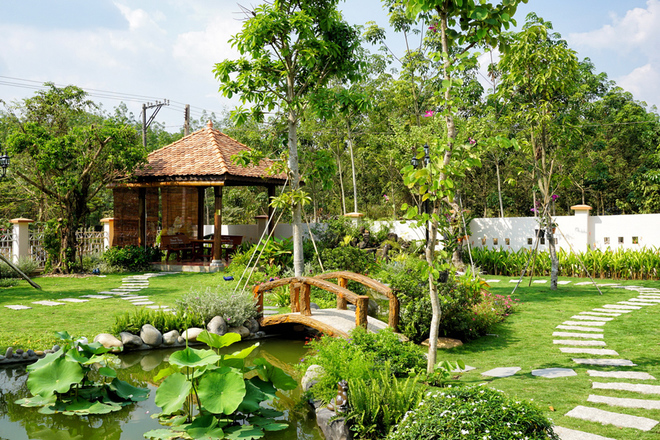

Hướng dẫn làm vườn cho người mới bắt đầu
Chào mừng bạn đã đến với hướng dẫn làm vườn. Đây là một tài liệu co bản giúp bạn bắt đầu với việc trồng cây
Chuẩn bị
Trước khi bắt đầu hãy chuẩn bị các dụng cu sau
- Găng tay làm vườn
- Xẻng nhỏ
- Chậu cây
- Đất trồng
Các bước thực hiện
- Trọn vị trí phù hợp cho vườn của bạn.Hãy đảm bảo có đủ ánh sáng mặt trời
- chuẩn bị đất trồng, đảm bảo đất đủ dinh dưỡng và thoát nước tốt
- trồng cây hoặc trực tiếp vào đất. Hãy chắc chắn rằng bạn trồng cây đúng cách để cây phát triển tốt
- tưới nước cho cây đều đặn nhưng đừng tưới quá nhiều. Cây cần đủ nước nhưng không thích nước ngập úng
Bảo dưỡng
Để cây phát triển mạnh,bạn cần
- tưới nước định kỳ
- bón phân hàng tháng
- kiểm tra sâu bệnh và sử lí kịp thời
Hình ảnh
dưới đây là một số hình ảnh về vườn

